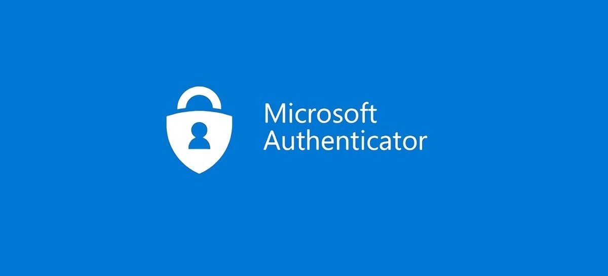

Redefinir senha do Microsoft Authenticator
postado 10 maio 2024 Para redefinir o acesso ao Portal Ca, o usuário deve seguir os seguintes passos:
- Solicitar o reset do seu usuário de rede do Microsoft Autenticator para a Intendência através do ramal 9 (08005952001).
- Desinstalar o aplicativo Microsoft Autenticator do celular e logo após instalar novamente.
- Após a instalação o usuário deve abrir uma janela anônima no Chrome e ir para o seguinte endereço: office.com e no campo entrar digitar seu usuário de rede exemplo: x........ ou m...... e sua senha do computador.
- Após deverá seguir os passos solicitados pelo Autenticator e ler o QRCode.
- Inclua o seu usuário via leitura do QRCode ou pelo sinal de + no aplicativo no canto superior direito.

Central de Comunicados - Assessoria de Tecnologia da Informação (Nucleo de Infraestrutura e Suporte de TIC) ©.